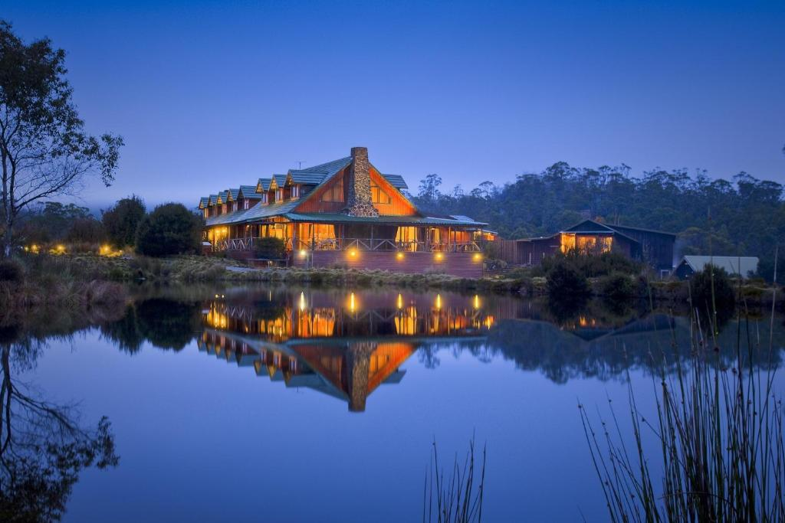

Tasmania: The Ultimate Rural Escape for Nature Lovers
If you're dreaming of a rural getaway packed with pristine wilderness, gourmet food and rich history, Tasmania should be at the top of your list.
Australia's island state is a haven for outdoor adventurers, food lovers, and anyone looking to escape into nature's embrace. Whether you;re hiking in ancient rainforests, indulging in fresh seafood, or exploring historic villages, Tasmsnia offers an unforgettable tree change experience.
Weather and Best Times to Visit
Tasmania's climate is mild and temperate, with four distinct seasons.
| Summer (Dec-Feb) | Autumn (Mar-May) | Winter (Jun-Aug) | Spring (Sep-Nov) |
|---|---|---|---|
| The warmest season (17-23C), perfect for beaches, wildlife spotting, and festivals like MONA FOMA and the Sydney to Hobart Yacht Race. | The landscape turns into a canvas of reds and golds, making it ideal for scenic drives and wine tours. | Snow douested mountains, roaring fireplaces, and ozy retreats make it a magical escape, especially in Cradle Mountain or Hobart. | Wildflowers bloom, and the weather warms up for outdoor adventures. |
Top Things to See and Do
- Explore Freycinet National Park: Hike to Wineglass Bay Lookout and see one of the world's most beautiful beaches.
- Wander Through Port Arthur: A hauntingly beautiful UNESCO-listed convict settlement, cemented in history.
- Visit MONA (Museum of Old and New Art): Hobart's world famous art museum that blends weird, wonderful, and thought provoking exhibits.
- See the Fairy Penguins: Head to Bicheno or Bruny Island at dusk to watch these adorable creatures waddle ashore.
- Cruise the Gordon River: Take a boat tour through the remote, untouched wilderness of the West Coast.
- Indulge in a Wine Tour: The Tamar Valley and Coal River Valley are famous for cool-climate wines like Pinot Noir and sparkling varieties.
- Hike Cradle Mountain, Lake St Clair National Park: Home to Dove Lake, rugged peaks, and alpine scenery straight out of a postcard.
- Cycle the Blue Derby Trails: One of the best mountain biking spots in the Southern Hemisphere.
Where to Eat and Drink
Tasmania is a culinary paradise, with an emphasis on fresh, local, and seasonal produce.
Franklin (Hobart) |
Barilla Bay Oysters (Hobart) |
The Agrarian Kitchen (New Norfolk) |
Jackman and Ross (Battery Point, Hobart) |
Pyengana Dairy (near Bay of Fires) |
A fine-dinin experience featuring locally sourced ingredients. | Indulge in some of Australia's best oysters, fresh from the ocean. | A farm-to-table experience in a former asylum. | A beloved bakery with artisan pastries and pies. | Home to award-winning cheeses and farm-fresh milkshakes. |
|---|
Where to Stay
Tasmania offers luxury lodges, cozy cabins, and boutique hotels surronded by nature.
Daffire Freycinet (Freycinet National Park)
A high-end luxury retreat with unparalelled views of Wineglass Bay.
MACq 01 (Hobart)
A stylish hotel drawing inspiration from Tasmania's rich storytelling history.
Pumphouse Point (Lake St Clair)
A unique stay in a converted hydroelectric pump house on the lake.
Peppers Cradle Mountain Lodge
Perfect for wilderness lovers exploring Cradle Mountain.